02 The Stories
Swipe-through stories
about being loved gently.
Where the reels are loud, the carousels are quiet. Hand-drawn and hand-written, they’re the “be with someone who…” lines people don’t just like — they save them, and send them to the person they mean them about.
17carousels
82Kshares
44Ksaves · kept, not scrolled
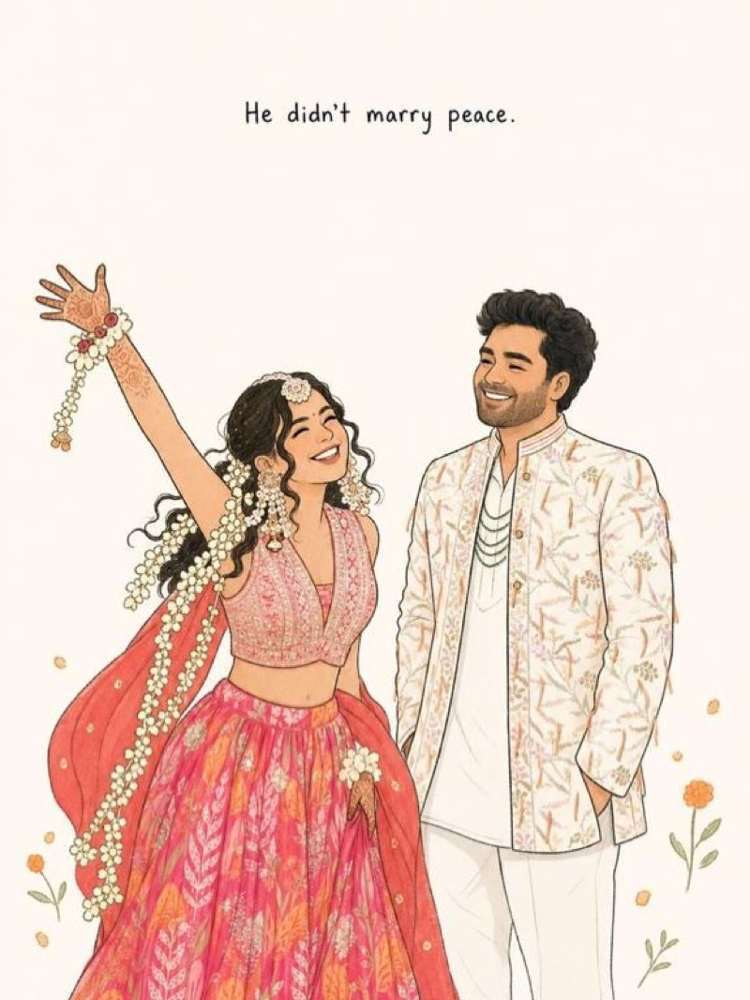
Share this to the person who didn’t marry a calm girl. 21K shares · 7.0K saved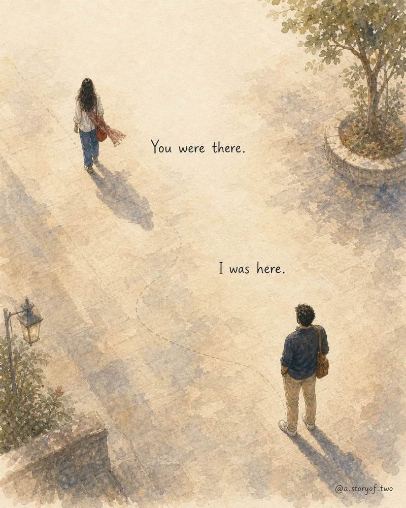
Different roads. Different timings. Same feeling when we finall… 7.1K shares · 7.1K saved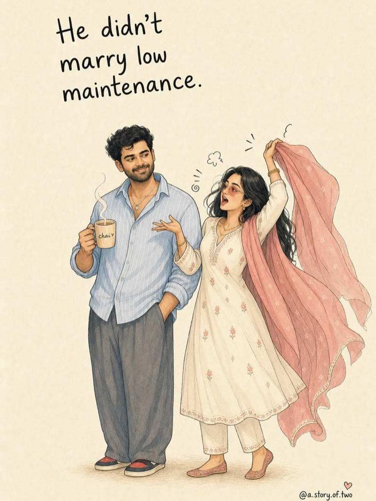
He didn’t marry the easiest version of me. 6.8K shares · 2.6K saved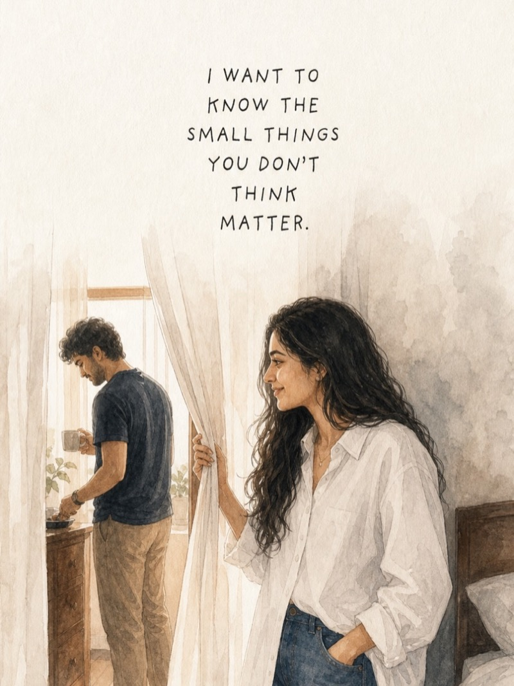
I want to know the small things you don’t think matter. 2.7K shares · 1.8K saved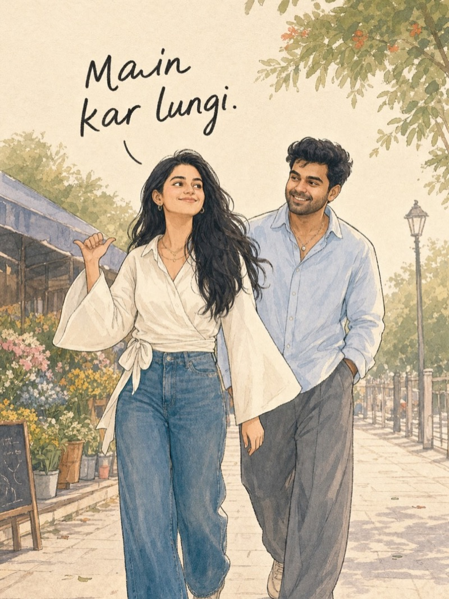
She says, “main kar lungi.” 1.3K shares · 1.5K saved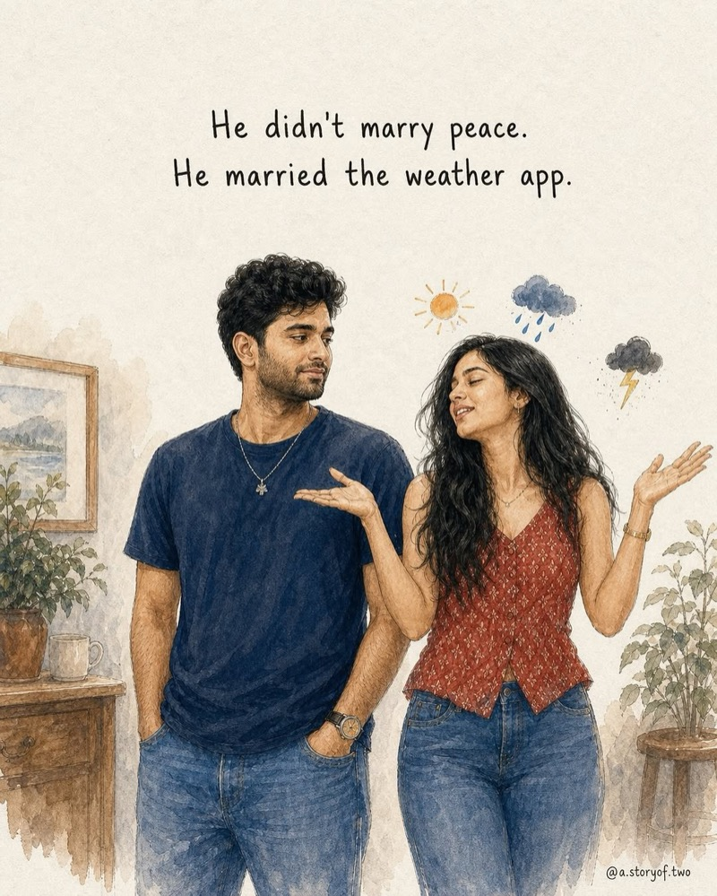
Biwi nahi, pura toofan hai. Tag your toofan. 591 shares · 495 saved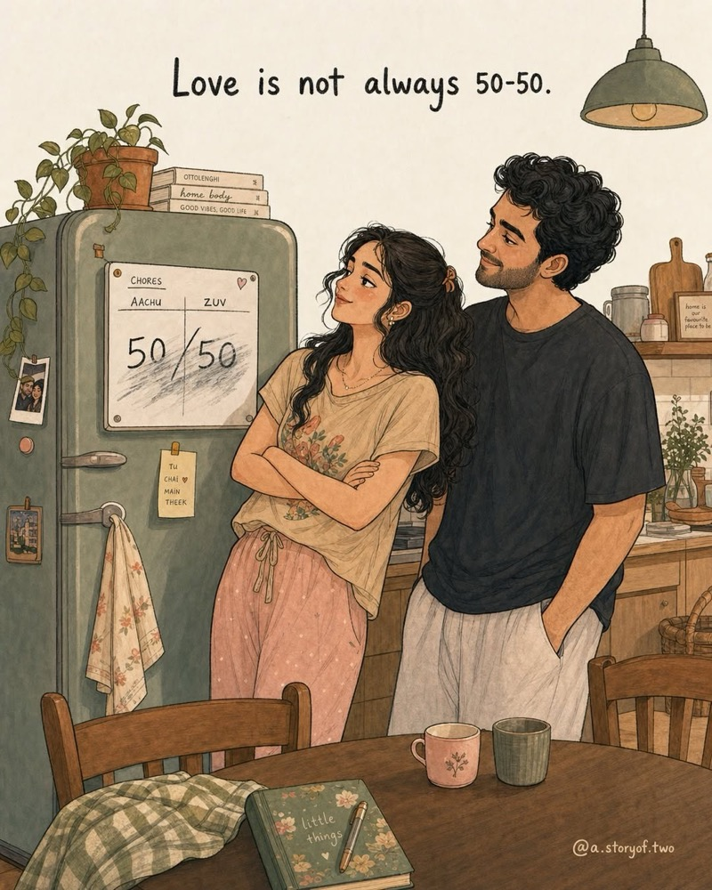
not every act of love is loud. 383 shares · 367 saved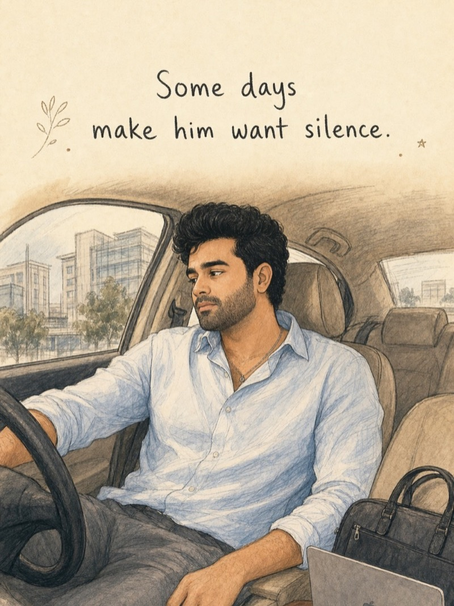
some days ask too much from him, 92 shares · 111 saved※ Illustrations
Hand-drawn, because some
feelings deserve paper.
The watercolor language the stories are wrapped in — and the first things headed for prints.
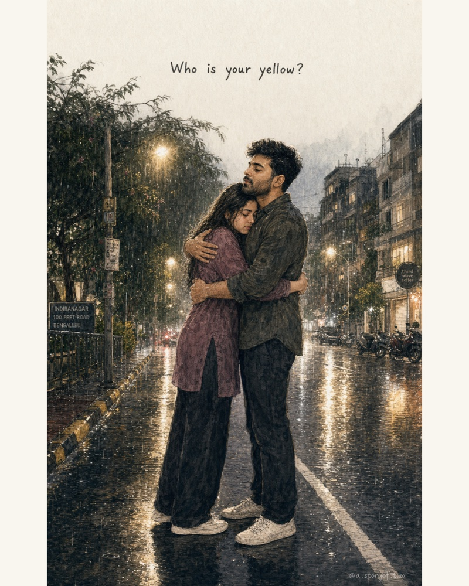
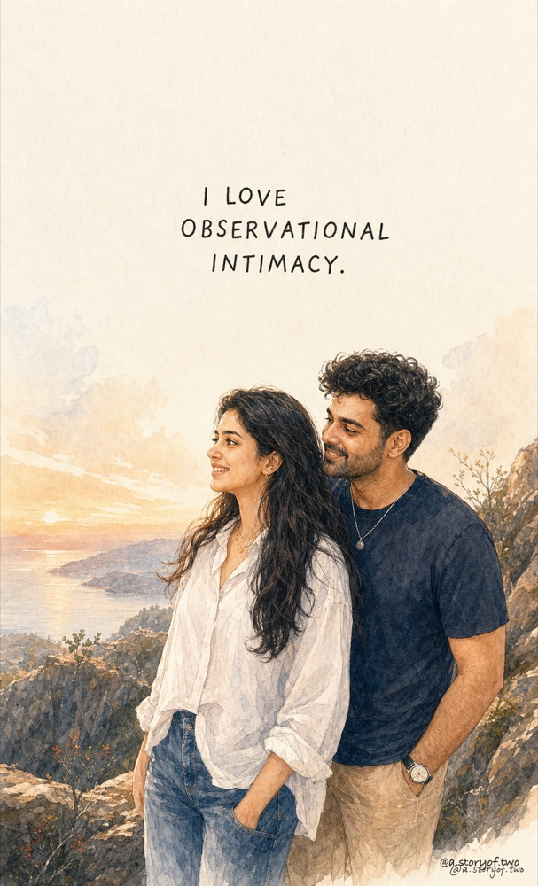
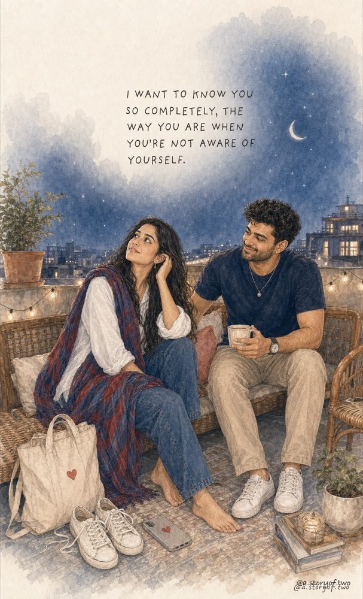
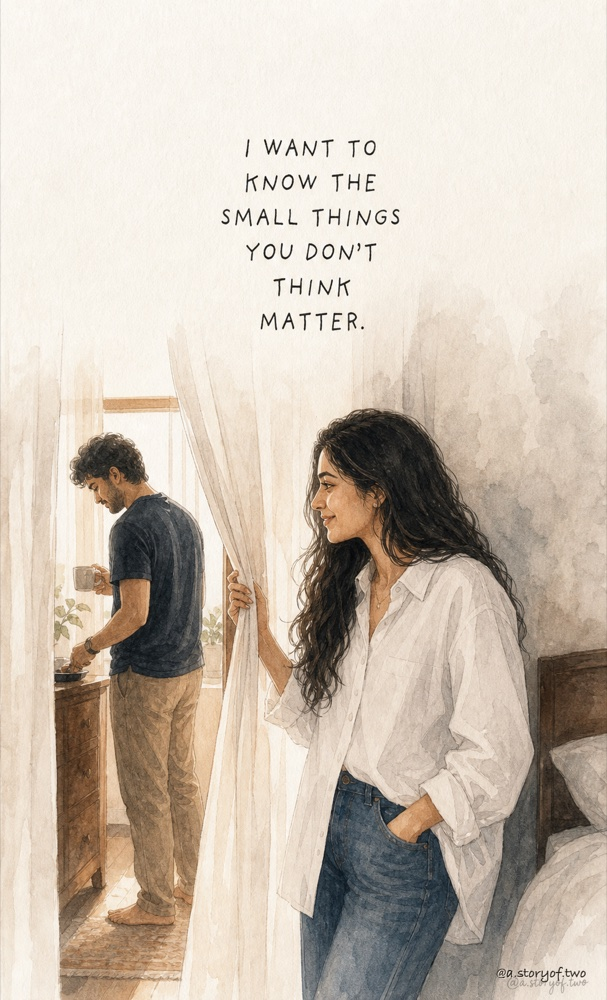
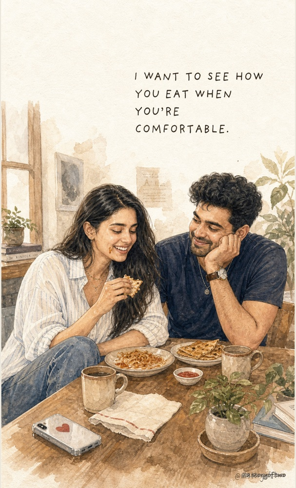
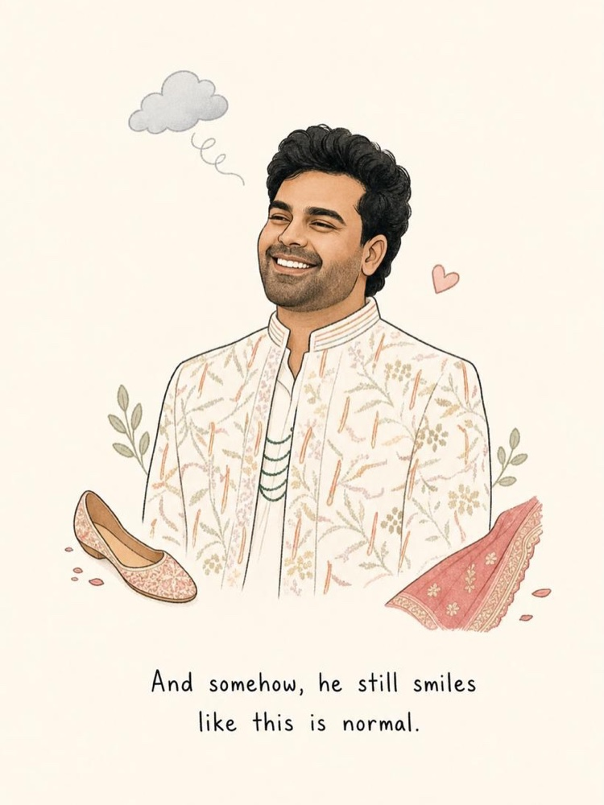
There are more, every week — follow the stories on Instagram ↗